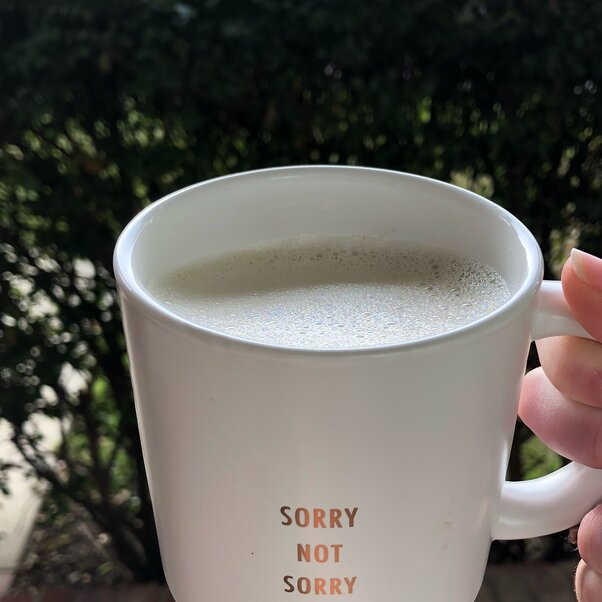

Abbey's White Chocolate Latte

Description
Ingredients
- 1 1/2 cups milk
- 1 tablespoon heavy cream
- 1/8 teaspoon vanilla extract
- 1 tablespoon white sugar
- 1/2 cup brewed espresso
- 1/4 cup white chocolate chips,chopped
Steps
- Combine the milk and cream in a saucepan, and whisk over high heat until hot and frothy. Remove from heat and stir in the vanilla and sugar. Whisk together hot espresso and white chocolate chips in a mug until smooth. If you are making two, pour half into another mug. Top with the frothy hot milk and stir to blend in the flavoring.